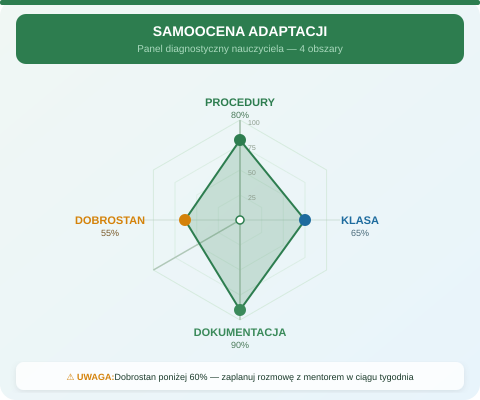

Co zrobić najpierw
- Zapisać kontakt do mentora i osób pierwszego kontaktu.
- Sprawdzić dziennik, pocztę, klasy i sale.
- Zebrać pytania o procedury.
- Ustalić termin pierwszej rozmowy.
Strefa nauczyciela początkującego
Ta ścieżka porządkuje zadania, pytania do mentora i refleksję. Strona pomaga przygotować się do rozmów, ale właściwe notatki prowadzi się poza stroną albo drukuje jako karty.

Raz w miesiącu zapisz sukces, trudność, wniosek o uczniach i potrzebne wsparcie. Nie musisz pokazywać mentorowi wszystkiego; wybierasz, co wniesiesz na rozmowę.
Otwórz kartę refleksjiWskaż mentorowi, co ma obserwować: strukturę lekcji, pracę z klasą, instrukcje, zarządzanie czasem albo aktywność uczniów.
Otwórz obserwacjePo pierwszym półroczu wybierz trzy konkretne cele. Dobry cel ma miernik postępu, termin i uzgodnione wsparcie.
Otwórz IPR